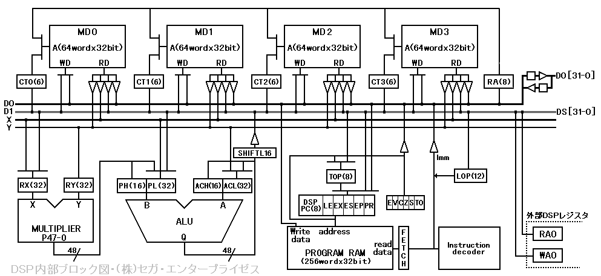

★HARDWARE Manual
★SCUユーザーズマニュアル
★HARDWARE Manual
★SCUユーザーズマニュアル
▲戻る｜
進む▼
SCUユーザーズマニュアル
第４章 DSP制御
■4.1 DSP内部ブロック図
- 図4.1に、DSPの内部ブロック図を示します。
- 図4.1 DSP内部ブロック図

- ●ALU
- 48bitまで出力可能な演算器です。通常演算は32bitで実行します。積和演算のみ48bitの演算となります。
- ●MULTIPLIER
- 32bit×32bitで64bitの結果を得、そのうち下位48bitを出力する乗算器です。演算結果は48bitのデータ中、上位16bitをPH(下参照)下位32bitをPL(下参照)に格納します。
- ●TOP(Ｗ)
- 先頭アドレスを格納する8bitのレジスタです。JUMP命令、サブルーチンの実行処理等では、このレジスタに先頭アドレスを格納し、処理を実行します。
- ●LOP(Ｗ)
- ループカウンタを格納する12bitのレジスタです。1命令の繰り返し実行処理で、ループ回数を設定します。
- ●CT0-3(Ｗ)
- データRAM0-3のアクセスアドレスを格納する6bitのレジスタです。
- ●MD0-3(Ｒ／Ｗ)
- データRAM0-3のデータを格納する32bit単位のデータポートです。各データRAM毎に64個のデータポートを持っています。
- ●RA(Ｗ)
- データRAMをアクセスするためのアドレス格納レジスタです。このレジスタは8bitです。上位2bitでRAM指定番号(0-3)、下位6bitでRAMアクセスアドレスを格納します。
- ●RX(Ｗ)
- 乗算器入力データを格納する32bitのXバス接続レジスタです。
- ●RY(Ｗ)
- 乗算器入力データを格納する32bitのYバス接続レジスタです。
- ●PH(Ｗ)
- 48bitの乗算器出力データ中、上位16bitを格納するレジスタです。また、ALU演算器の入力データB(48bit)中、上位16bitを格納する入力データ格納レジスタでもあります。
- ●PL(Ｗ)
- 48bitの乗算器出力データ中、下位32bitを格納するレジスタです。また、ALU演算器の入力データB(48bit)中、下位32bitを格納する入力データ格納レジスタでもあります。
- ●ACH(Ｗ)
- ALUの演算結果を表す48bitのデータ中、上位16bitを格納するレジスタです。また、ALU演算器の入力データA(48bit)中、上位16bitを格納する入力データ格納レジスタでもあります。
- ●ACL(Ｗ)
- ALUの演算結果を表す48bitのデータ中、下位32bitを格納するレジスタです。また、ALU演算器の入力データA(48bit)中、下位32bitを格納する入力データ格納レジスタでもあります。
- ●D0バス
- 外部とアクセスするための32bitデータバスです。28MHzで動作します。メインCPUとのアクセスに使用します。
- ●Xバス、Yバス
- 演算器入力データを入手するための32bitデータバスです。14MHzで動作します。
- ●RA0(Ｗ)
- 外部→DSPのDMA転送で使用する32bitの外部アドレスレジスタです。4byte単位の値をとりますので、外部アドレスを2bit右シフトして設定してください。
- ●WA0(Ｗ)
- DSP→外部のDMA転送で使用する32bitの外部アドレスレジスタです。4byte単位の値をとりますので、外部アドレスを2bit右シフトして設定してください。
▲戻る｜
進む▼
★HARDWARE Manual
★SCUユーザーズマニュアル
Copyright SEGA ENTERPRISES, LTD., 1997